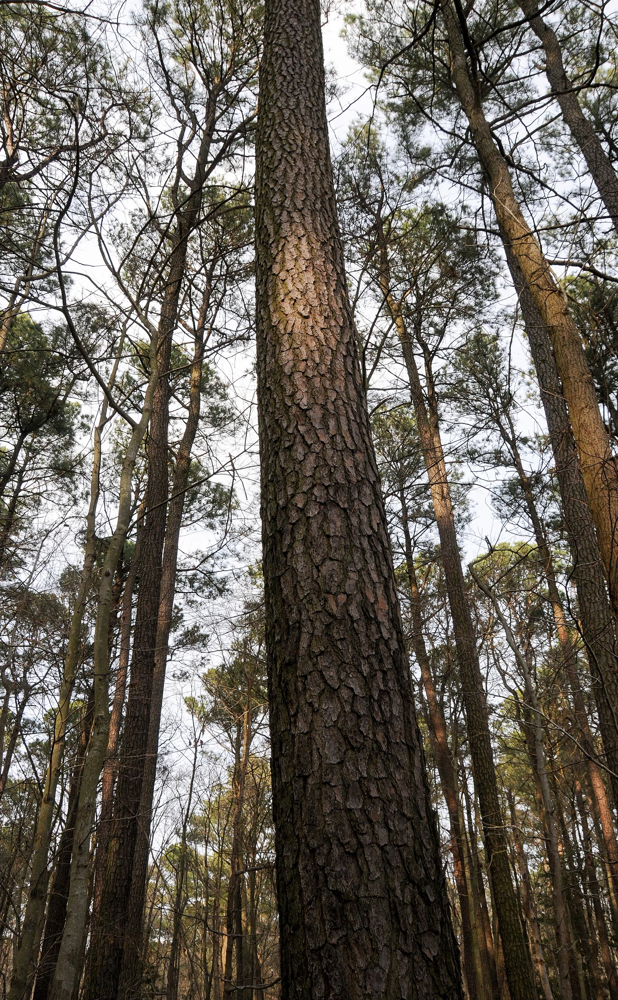
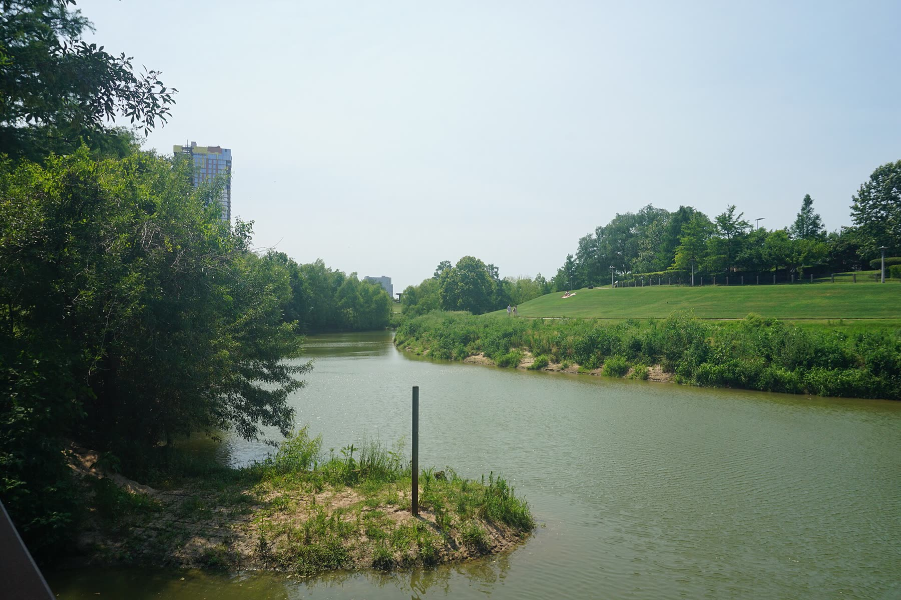
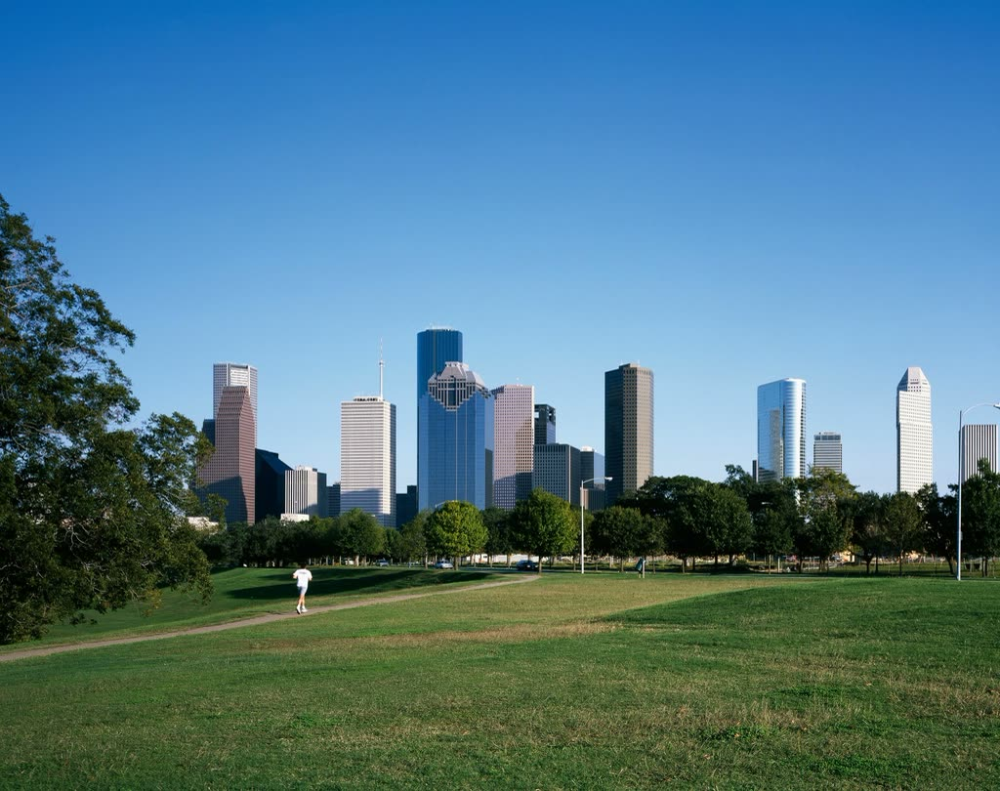

KatherineBoydLaw
- Estate planning & probate
- 950 Echo Lane, West Houston
- Weekdays 9 to 4, by appointment
Wills, trusts and probate for Houston families, explained in plain language.

Wills, trusts and probate for Houston families, explained in plain language.
Young parents writing a first will. Couples updating a plan after a move, a marriage or a new grandchild. Executors handling an estate after a loss. Each one gets a plan written for their family, not a form.

| Will | who inherits | |
| Your property goes where you choose, and you name a guardian for minor children. | ||
| Revocable trust | avoids probate | |
| Holds assets for your family and keeps them out of court after you are gone. | ||
| Power of attorney | money decisions | |
| A person you trust can pay bills and manage accounts if you cannot. | ||
| Medical directive | health decisions | |
| Your wishes for care and end-of-life treatment, written down for your family. | ||
| Will probate | court validation | |
| Taking the will through the Texas court so it can be carried out. | ||
| Executor assistance | your duties | |
| Clear steps for the person named to handle the estate, one deadline at a time. | ||
| Estate administration | start to finish | |
| Collecting, listing and distributing the estate's assets to the heirs. | ||
Without a will, Texas law writes one for you. Answer three questions and read the clause the state would fill in.
For a married person with children who are also their spouse's
Everything goes to your spouse.
Your spouse gets one third of your belongings and the use of one third of your real estate for life. Your children get the rest.
A simplified reading of the Texas Estates Code, chapter 201, for general information. It is not legal advice and leaves out guardianship of children, which only a will can name.
Write your own insteadWe talk about your family, what you own and what worries you. Legal terms come in plain language, and you leave knowing which documents fit your life.
Katherine prepares each document for your situation, then reads it through with you and changes anything that does not match your wishes.
You sign with witnesses in a short, simple ceremony that meets every Texas requirement. When life changes later, you call the same person.
I started my career in 2011 as an oil and gas title attorney, tracing who owned what, often back several generations of deeds and wills.
That work showed me what happens when a family's wishes were never written down. In 2020 I expanded my practice to estate planning and probate so I could help families before that happens.
Many of the families I meet are young parents who want to name who would raise their children, or grown children handling a parent's estate for the first time.
I take the time to explain each choice, and I answer my own emails and phone calls. If you are not sure where to begin, start with a conversation.
A review shared by a client of Katherine Boyd Law.
Reviewed with you, line by line
No document is signed until you have understood every clause.
Estate planning client
“Katherine was fantastic to work with. Very knowledgeable, very responsive to emails or phone calls. She helped guide us through the process and ensured we understood what our options were and what those choices meant.”
Answered by Katherine directly
Email or call, and your questions go to Katherine herself.
Yes. Even a modest estate needs a plan to avoid probate delays, to name a guardian for your children, and to leave clear instructions for medical and financial decisions.
Every three to five years, and after marriage, divorce, a birth, a death or a large change in what you own. Texas law changes too.
The Texas intestacy rules decide who inherits, which can leave out people you meant to provide for and make things harder for a surviving spouse. Try the questions above to see how.
Two to three weeks for a simple plan with a will and powers of attorney. Four to six weeks for plans with a trust or business interests, depending on how quickly the details come together.
The probate practice here is will-based: proving a will, helping the executor and administering the estate. Call and Katherine will tell you plainly what your situation needs.

| Monday to Friday | 9:00 – 4:00 |
| Saturday | Closed |
| Sunday | Closed |